pacman::p_load(tidyverse,ggridges,ggrepel,ggthemes,ggstatsplot,ggsignif,hrbrthemes,patchwork,dplyr, gifski, gapminder,plotly,gganimate,ggiraph,magick)Take-home Exercise 4: Prototyping Modules for Visual Analytics Shiny Application
1. The Task
In this take-home exercise, I am required to select one of the module of my group’s proposed Shiny application and complete the following tasks:
To evaluate and determine the necessary R packages needed for the Shiny application and ensure that they are supported in R CRAN,
To prepare and test the specific R codes to ensure that they can run and return the correct output as expected,
To determine the parameters and outputs that will be exposed on the Shiny applications, and
To select the appropriate Shiny UI components for exposing the parameters determined above.
All teams must consult the prototype page of AY2022-2023 January Term Group 3: Tanzania Tourism Analysis. There are three main modules in this application: Exploratory Data Analysis & Confirmatory Data Analysis, Cluster Analysis and Decision Tree Analysis. Each of them were prepared by one of the member of the project team which they later combined into the Prototype page of their project website.
Take-home Exercise 4 will be similar to one of the prototype module prepared above in term of content but with the following differences:
I am required to prepare the prototype module report as Take-home Exercise 4 submission. This mean, it has to be published on my own coursework page.
I am required to include a section called UI design for the different components of the UIs for the proposed design.
For storyboarding the UI Design, I will need to consult Storyboard link.
2. About the Project
My project group StormTroopers is working on the topic of climate change.
As a small, low-lying city-state, Singapore is vulnerable to the effects of climate change which has brought about more extreme weather patterns - rising sea levels, dry spells and intense rainfall which at times can lead to flash floods.

Acording to an infographic above by the National Climate Change Secretariat Singapore:
- Daily mean temperatures are projected to increase by 1.4 to 4.6 degrees celsius; and
- The contrast between the wet months (November to January) and dry months (February and June to September) is likely to be more pronounced.
In Jan 2024, the Centre for Climate Research Singapore (CCRS) announced the Third National Climate Change Study (V3) which provided potential scenarios of our future based on low, medium, and high global greenhouse gas emissions.
- Very hot days will become more frequent.
- Extreme daily rainfall is projected to intensify.
- The mean sea level around Singapore is projected to rise up to 1.15m by end century, and up to around 2m by 2150 under the high emissions scenario.
It is important that we better understand how climate change has been affecting Singapore, by understanding the trends in our daily temperatures and rainfall over the years, and utilise historical data to forecast future climate data. It will provide guidance on whether and how Singapore will need to urgently develop ways to mitigate and adapt.
2.1 Issues to address
The scope I am in charge of is Confirmatory Data Analysis which seeks to address the following issues:
Are the changes in rainfall and temperature over the years statistically significant?
Are there really certain months “drier” or “wetter”/ “hotter” or “cooler”?
Are there certain locations “drier” or “wetter”/ “hotter” or “cooler”?
3. The Data
For this take-home exercise and the project, data utilised is the historical climate data from Metrological Service Singapore.
The team downloaded historical daily records from various weather stations across Singapore from 1980 to 2023 via API scrapping as a daily_historical.csv datafile.
4. Set-up
4.1 Installing and loading the required libraries
The following code chunk is used to install the necessary R packages:
4.2 Importing the Dataset
I will import the daily_historical.csv datafile using the following code chunk:
daily_historical <- read_csv("data/daily_historical.csv",locale=locale(encoding="latin1"))
daily_historical# A tibble: 329,156 × 13
station year month day daily_rainfall_total highest_30_min_rainf…¹
<chr> <dbl> <dbl> <dbl> <dbl> <dbl>
1 Macritchie Res… 1980 1 1 0 NA
2 Macritchie Res… 1980 1 2 0 NA
3 Macritchie Res… 1980 1 3 0 NA
4 Macritchie Res… 1980 1 4 0 NA
5 Macritchie Res… 1980 1 5 22.6 NA
6 Macritchie Res… 1980 1 6 49.6 NA
7 Macritchie Res… 1980 1 7 2.4 NA
8 Macritchie Res… 1980 1 8 0 NA
9 Macritchie Res… 1980 1 9 0 NA
10 Macritchie Res… 1980 1 10 0 NA
# ℹ 329,146 more rows
# ℹ abbreviated name: ¹highest_30_min_rainfall
# ℹ 7 more variables: highest_60_min_rainfall <dbl>,
# highest_120_min_rainfall <dbl>, mean_temperature <dbl>,
# maximum_temperature <dbl>, minimum_temperature <dbl>,
# mean_wind_speed <dbl>, max_wind_speed <dbl>As can be seen, there are a total of 329,156 records across 13 variables.
4.3 Data Cleaning
4.3.1 Remove missing values
Before proceeding with analysis, we first remove any missing values in the data using the following code chunk:
daily_historical <- drop_na(daily_historical)
daily_historical# A tibble: 44,856 × 13
station year month day daily_rainfall_total highest_30_min_rainfall
<chr> <dbl> <dbl> <dbl> <dbl> <dbl>
1 Admiralty 2014 1 1 0 0
2 Admiralty 2014 1 2 0 0
3 Admiralty 2014 1 3 4.6 4.4
4 Admiralty 2014 1 4 3.8 3.8
5 Admiralty 2014 1 5 3.6 1.2
6 Admiralty 2014 1 6 80 21.8
7 Admiralty 2014 1 7 2 2
8 Admiralty 2014 1 8 0 0
9 Admiralty 2014 1 9 2.6 1.4
10 Admiralty 2014 1 10 0 0
# ℹ 44,846 more rows
# ℹ 7 more variables: highest_60_min_rainfall <dbl>,
# highest_120_min_rainfall <dbl>, mean_temperature <dbl>,
# maximum_temperature <dbl>, minimum_temperature <dbl>,
# mean_wind_speed <dbl>, max_wind_speed <dbl>As can be seen, what remains is a total of 44,856 records across 13 variables.
4.3.2 Ensuring alignment in time period of records across weather stations
To ensure consistent comparison across all weather stations, the same time period would have to be used. As such, we need to check the starting and ending year of data across all weather stations:
daily_historical_start <- daily_historical %>%
group_by(station) %>%
summarise(earliest_year = min(year))
daily_historical_start# A tibble: 13 × 2
station earliest_year
<chr> <dbl>
1 Admiralty 2014
2 Ang Mo Kio 2014
3 Changi 2014
4 Choa Chu Kang (South) 2014
5 Clementi 2014
6 East Coast Parkway 2014
7 Jurong (West) 2014
8 Jurong Island 2014
9 Newton 2014
10 Pasir Panjang 2014
11 Sentosa Island 2014
12 Tai Seng 2014
13 Tuas South 2014daily_historical_start <- daily_historical %>%
group_by(station) %>%
summarise(latest_year = max(year))
daily_historical_start# A tibble: 13 × 2
station latest_year
<chr> <dbl>
1 Admiralty 2023
2 Ang Mo Kio 2023
3 Changi 2023
4 Choa Chu Kang (South) 2023
5 Clementi 2023
6 East Coast Parkway 2023
7 Jurong (West) 2023
8 Jurong Island 2023
9 Newton 2023
10 Pasir Panjang 2023
11 Sentosa Island 2023
12 Tai Seng 2023
13 Tuas South 2023As the starting and ending year of weather data across all 13 weather stations is 2014 and 2023 respectively, no further steps are required to align the time period of the data.
4.3.3 Converting data types for year, month and day
Based on a glimpse of the daily_historical dataframe, the data types for year, month and day are continuous.
glimpse(daily_historical)Rows: 44,856
Columns: 13
$ station <chr> "Admiralty", "Admiralty", "Admiralty", "Admir…
$ year <dbl> 2014, 2014, 2014, 2014, 2014, 2014, 2014, 201…
$ month <dbl> 1, 1, 1, 1, 1, 1, 1, 1, 1, 1, 1, 1, 1, 1, 1, …
$ day <dbl> 1, 2, 3, 4, 5, 6, 7, 8, 9, 10, 11, 12, 13, 14…
$ daily_rainfall_total <dbl> 0.0, 0.0, 4.6, 3.8, 3.6, 80.0, 2.0, 0.0, 2.6,…
$ highest_30_min_rainfall <dbl> 0.0, 0.0, 4.4, 3.8, 1.2, 21.8, 2.0, 0.0, 1.4,…
$ highest_60_min_rainfall <dbl> 0.0, 0.0, 4.4, 3.8, 1.6, 26.2, 2.0, 0.0, 2.0,…
$ highest_120_min_rainfall <dbl> 0.0, 0.0, 4.6, 3.8, 2.0, 30.6, 2.0, 0.0, 2.6,…
$ mean_temperature <dbl> 26.3, 26.9, 26.5, 26.4, 24.6, 25.0, 26.5, 26.…
$ maximum_temperature <dbl> 28.8, 30.7, 29.5, 31.2, 25.3, 27.2, 30.6, 30.…
$ minimum_temperature <dbl> 24.3, 24.6, 24.9, 24.7, 23.6, 23.1, 24.3, 24.…
$ mean_wind_speed <dbl> 10.8, 11.5, 9.7, 8.1, 8.4, 6.2, 8.0, 11.7, 6.…
$ max_wind_speed <dbl> 34.2, 38.2, 34.2, 32.8, 27.0, 29.5, 27.4, 34.…For ease of further analysis, we will convert them to categorical factor data type instead:
daily_historical <- daily_historical %>%
mutate_at(vars(year,month,day),as.factor)
glimpse(daily_historical)Rows: 44,856
Columns: 13
$ station <chr> "Admiralty", "Admiralty", "Admiralty", "Admir…
$ year <fct> 2014, 2014, 2014, 2014, 2014, 2014, 2014, 201…
$ month <fct> 1, 1, 1, 1, 1, 1, 1, 1, 1, 1, 1, 1, 1, 1, 1, …
$ day <fct> 1, 2, 3, 4, 5, 6, 7, 8, 9, 10, 11, 12, 13, 14…
$ daily_rainfall_total <dbl> 0.0, 0.0, 4.6, 3.8, 3.6, 80.0, 2.0, 0.0, 2.6,…
$ highest_30_min_rainfall <dbl> 0.0, 0.0, 4.4, 3.8, 1.2, 21.8, 2.0, 0.0, 1.4,…
$ highest_60_min_rainfall <dbl> 0.0, 0.0, 4.4, 3.8, 1.6, 26.2, 2.0, 0.0, 2.0,…
$ highest_120_min_rainfall <dbl> 0.0, 0.0, 4.6, 3.8, 2.0, 30.6, 2.0, 0.0, 2.6,…
$ mean_temperature <dbl> 26.3, 26.9, 26.5, 26.4, 24.6, 25.0, 26.5, 26.…
$ maximum_temperature <dbl> 28.8, 30.7, 29.5, 31.2, 25.3, 27.2, 30.6, 30.…
$ minimum_temperature <dbl> 24.3, 24.6, 24.9, 24.7, 23.6, 23.1, 24.3, 24.…
$ mean_wind_speed <dbl> 10.8, 11.5, 9.7, 8.1, 8.4, 6.2, 8.0, 11.7, 6.…
$ max_wind_speed <dbl> 34.2, 38.2, 34.2, 32.8, 27.0, 29.5, 27.4, 34.…4.4 Data Wrangling
We will analyse weather and rainfall data separately and hence we will create two dataframes historical_temp and historical_rainfall from the dataset daily_historical:
historical_temp <- daily_historical %>% select(1:4,9:11)
historical_temp# A tibble: 44,856 × 7
station year month day mean_temperature maximum_temperature
<chr> <fct> <fct> <fct> <dbl> <dbl>
1 Admiralty 2014 1 1 26.3 28.8
2 Admiralty 2014 1 2 26.9 30.7
3 Admiralty 2014 1 3 26.5 29.5
4 Admiralty 2014 1 4 26.4 31.2
5 Admiralty 2014 1 5 24.6 25.3
6 Admiralty 2014 1 6 25 27.2
7 Admiralty 2014 1 7 26.5 30.6
8 Admiralty 2014 1 8 26.9 30.8
9 Admiralty 2014 1 9 25.4 27.5
10 Admiralty 2014 1 10 26.9 31.9
# ℹ 44,846 more rows
# ℹ 1 more variable: minimum_temperature <dbl>Saving it as a csv file:
write_csv(historical_temp, "data/historical_temp.csv")historical_rainfall <- daily_historical %>% select(1:8)
historical_rainfall# A tibble: 44,856 × 8
station year month day daily_rainfall_total highest_30_min_rainfall
<chr> <fct> <fct> <fct> <dbl> <dbl>
1 Admiralty 2014 1 1 0 0
2 Admiralty 2014 1 2 0 0
3 Admiralty 2014 1 3 4.6 4.4
4 Admiralty 2014 1 4 3.8 3.8
5 Admiralty 2014 1 5 3.6 1.2
6 Admiralty 2014 1 6 80 21.8
7 Admiralty 2014 1 7 2 2
8 Admiralty 2014 1 8 0 0
9 Admiralty 2014 1 9 2.6 1.4
10 Admiralty 2014 1 10 0 0
# ℹ 44,846 more rows
# ℹ 2 more variables: highest_60_min_rainfall <dbl>,
# highest_120_min_rainfall <dbl>Saving it as a csv file:
write_csv(historical_rainfall, "data/historical_rainfall.csv")5. Confirmatory Data Analysis (CDA)
5.1 CDA #1 - Are the changes in rainfall and temperature over the years statistically significant?
The first CDA that I will address is whether changes in rainfall and temperature over the years are statistically significant
As the data ranges from 2014 to 2023, there are 10 years worth of data.
5.1.1 Historical rainfall over the years
historical_rainfall_year <- historical_rainfall %>%
group_by(station,year) %>%
summarise(yearly_rainfall = sum(daily_rainfall_total))
DT::datatable(historical_rainfall_year,class = "compact")Saving it as a csv file:
write_csv(historical_rainfall_year, "data/historical_rainfall_year.csv")p1 <- ggplot(historical_rainfall_year,
aes(y=yearly_rainfall,
x = year,
group = station,
color = station)) +
geom_line() +
facet_wrap(~station,scales = "free_x") +
labs(title="Yearly rainfall across weather stations from 2014 to 2023",
y = "Rainfall volume (mm)",
x = "Year") +
theme_minimal() +
theme(axis.text.x=element_text(angle=90,hjust=1),panel.spacing.y = unit(5,"lines") )
ggplotly(p1)Over the years, across the 13 weather stations, the rainfall volume is observed to have increased albeit by different intensities. We need to examine if the differences are statistically different.
Before we do so, we will need to determine whether the rainfall for each year follows a normal or non-normal distribution and we visualise the distribution of rainfall using ridgeline plots, using the code chunk below.
p2 <- ggplot(historical_rainfall,
aes(x = daily_rainfall_total,
y = year,
fill = 0.5 - abs(0.5-stat(ecdf)))) +
stat_density_ridges(geom = "density_ridges_gradient",
calc_ecdf = TRUE) +
scale_fill_viridis_c(name = "Tail probability",
direction = -1,
option="turbo")+
facet_wrap(~station) +
theme_ridges(font_size = 25)+
coord_cartesian(xlim = c(0,50))+
labs(title="Distribution of Daily Rainfall from 2014 to 2023 (zoomed in)",
y="Station",
x="Rainfall Volume (mm)")
p2p3 <- ggplot(historical_rainfall,
aes(x = daily_rainfall_total,
y = year,
fill = 0.5 - abs(0.5-stat(ecdf)))) +
stat_density_ridges(geom = "density_ridges_gradient",
calc_ecdf = TRUE) +
scale_fill_viridis_c(name = "Tail probability",
direction = -1,
option="turbo")+
facet_wrap(~station) +
theme_ridges(font_size = 25)+
labs(title="Distribution of Daily Rainfall from 2014 to 2023",
y="Station",
x="Rainfall Volume (mm)")
p3
As can be seen from the plots above, the distribution of rainfall is not normal (with the plots right-skewed), as such, I will utilise non-parametric test.
The hypothesis is as follows:
H0: There is no difference between median rainfall per year across 10 years.
H1: There is a difference between median rainfall per year across 10 years.
p4 <- ggbetweenstats(
data = historical_rainfall_year,
x = year,
y = yearly_rainfall,
type = "np",
pairwise.display = "non-significant",
messages = FALSE,
title="Distribution of Rainfall across 10 years (2014 to 2023)",
ylab = "Rainfall volume (mm)",
xlab = "Year",
ggsignif.args = list(textsize = 5)
) +
theme(text = element_text(size = 20), plot.title=element_text(size=20))
p4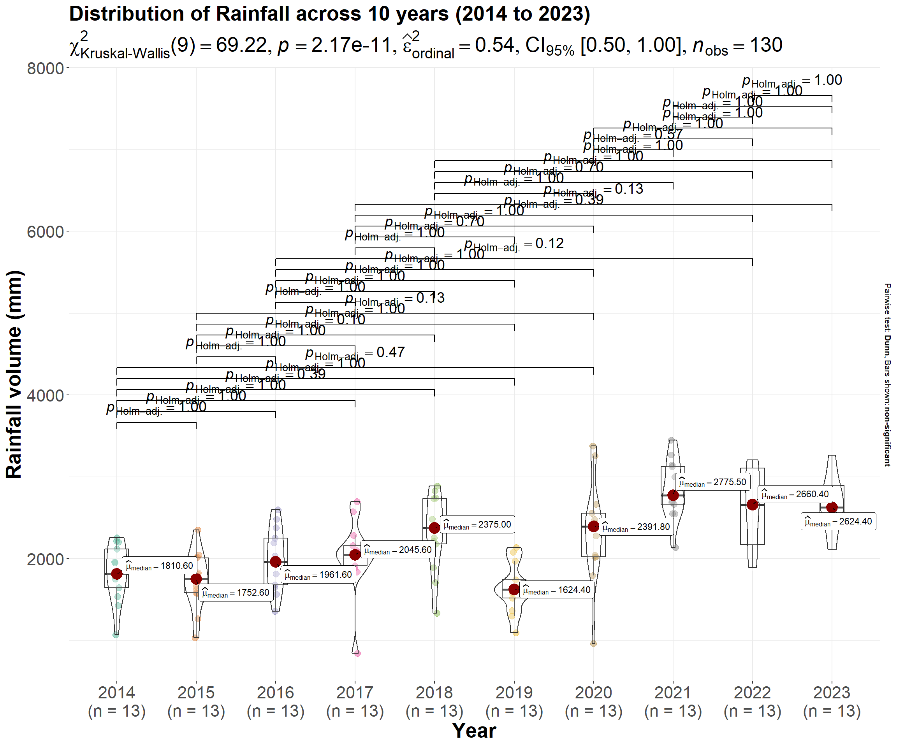
The plot above shows p-values of pairwise test that have p-values < 0.05 and for which the null hypothesis will be rejected at alpha = 0.05. There is sufficient evidence to indicate that there is a difference in the median rainfall per year between years:
2014 and 2015 with 2021 to 2023
2016 with 2021 and 2023
2017 with 2021
2018 with 2019
2019 with 2020 to 2023
Overall, this indicates that changes in rainfall over the years is statistically significant.
The hypothesis is as follows:
H0: There is no difference between median daily rainfall across 10 years.
H1: There is a difference between median daily rainfall across 10 years.
p5 <- ggbetweenstats(
data = historical_rainfall,
x = year,
y = daily_rainfall_total,
type = "np",
messages = FALSE,
title="Distribution of Rainfall across 10 years (2014 to 2023)",
ylab = "Rainfall volume (mm)",
xlab = "Year",
ggsignif.args = list(textsize = 5)
) +
theme(text = element_text(size = 20),plot.title=element_text(size=20))
p5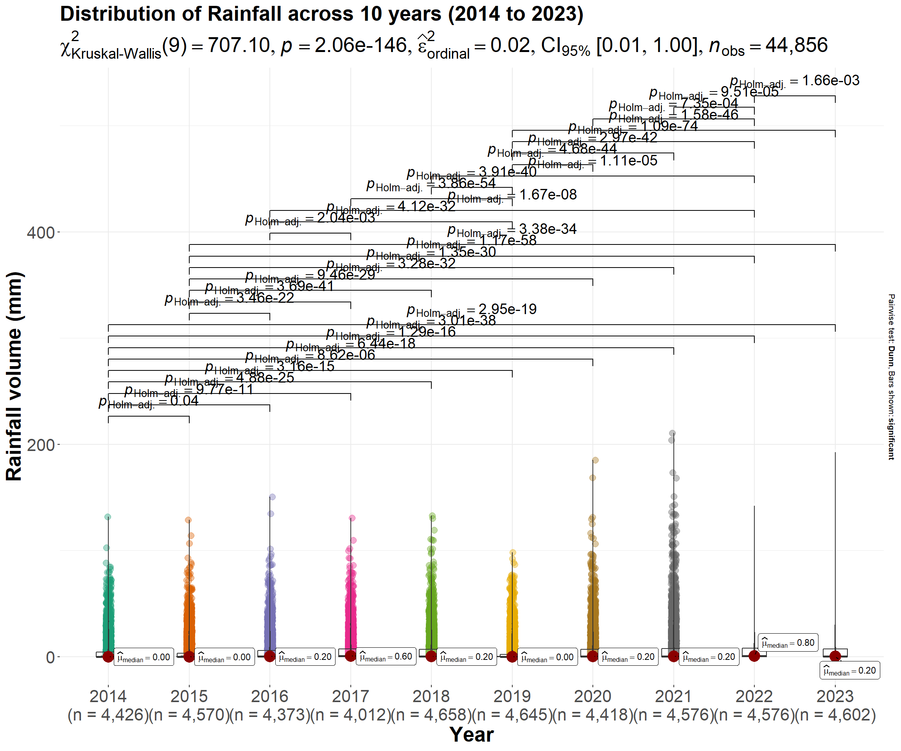
This test shows a more detailed comparison of median daily rainfall across the 10 years. As the p-values of the test above are < 0.05, we reject the null hypothesis at alpha = 0.05. There is sufficient evidence to indicate that there is a difference in the median daily rainfall across the years.
5.1.2 Historical temperature over the years
historical_temp_year <- historical_temp %>%
group_by(station,year) %>%
summarise(median_mean_temp = median(mean_temperature),
median_max_temp = median(maximum_temperature),
median_min_temp = median(minimum_temperature))
DT::datatable(historical_temp_year,class = "compact")Saving it as a csv file:
write_csv(historical_temp_year, "data/historical_temp_year.csv")p6 <- ggplot(historical_temp_year,
aes(y = median_mean_temp,
x = year,
group = station,
color = station)) +
geom_line()+
facet_wrap(~station,scales = "free_x") +
labs(title="Median daily mean temperature across weather stations from 2014 to 2023",
y = "Temperature (°C)",
x = "Year") +
theme_minimal() +
theme(axis.text.x=element_text(angle=90,hjust=1))
p6 <- ggplotly(p6, tooltip="all",width = 800,height = 600) %>%
layout(width = 800, height = 600)
p6Based on observation, it seems like median daily mean temperature for each weather station did not undergo significant changes over the years from 2014 to 2023.
p7 <- ggplot(historical_temp_year,
aes(y = median_max_temp,
x = year,
group = station,
color = station)) +
geom_line() +
facet_wrap(~station,scales = "free_x") +
labs(title="Median daily max temperature across weather stations from 2014 to 2023",
y = "Temperature (°C)",
x = "Year") +
theme_minimal() +
theme(axis.text.x=element_text(angle=90,hjust=1))
p7 <- ggplotly(p7, tooltip="all",width = 800,height = 600) %>%
layout(width = 800, height = 600)
p7Based on observation, it seems like median daily max temperature for each weather station did not undergo significant changes over the years from 2014 to 2023. Slight increases observed for Choa Chu Kang (South), Clementi, East Coast Parkway, Newton and Sentosa Island weather stations.
p8 <- ggplot(historical_temp_year,
aes(y = median_min_temp,
x = year,
group = station,
color = station)) +
geom_line() +
facet_wrap(~station,scales = "free_x") +
labs(title="Median daily min temperature across weather stations from 2014 to 2023",
y = "Temperature (°C)",
x = "Year") +
theme_minimal() +
theme(axis.text.x=element_text(angle=90,hjust=1))
p8 <- ggplotly(p8, tooltip="all",width = 800,height = 600) %>%
layout(width = 800, height = 600)
p8Based on observation, it seems like median daily minimum temperature for each weather station did not undergo significant changes over the years from 2014 to 2023.
Likewise, to determine whether the changes in the median daily mean, median daily maximum and median daily minimum temperatures are significant, we will need to determine whether the temperature data follows a normal or non-normal distribution. We visualise the distribution using ridgeline plots, using the code chunks below.
p9 <- ggplot(historical_temp,
aes(x = mean_temperature,
y = year,
fill = 0.5 - abs(0.5-stat(ecdf)))) +
stat_density_ridges(geom = "density_ridges_gradient",
calc_ecdf = TRUE) +
scale_fill_viridis_c(name = "Tail probability",
direction = -1,
option="turbo")+
facet_wrap(~station) +
theme_ridges(font_size = 25)+
labs(title="Distribution of Daily Mean Temperature from 2014 to 2023",
y="Station",
x="Temperature (°C)")
p9
As can be seen from the plot above, the distribution of daily mean temperature is not normal, as such, non-parametric test will be used.
p10 <- ggplot(historical_temp,
aes(x = maximum_temperature,
y = year,
fill = 0.5 - abs(0.5-stat(ecdf)))) +
stat_density_ridges(geom = "density_ridges_gradient",
calc_ecdf = TRUE) +
scale_fill_viridis_c(name = "Tail probability",
direction = -1,
option="turbo")+
facet_wrap(~station) +
theme_ridges(font_size = 25)+
labs(title="Distribution of Daily Maximum Temperature from 2014 to 2023",
y="Station",
x="Temperature (°C)")
p10As can be seen from the plot above, the distribution of daily maximum temperature is not normal, as such, non-parametric test will be used.
p11 <- ggplot(historical_temp,
aes(x = minimum_temperature,
y = year,
fill = 0.5 - abs(0.5-stat(ecdf)))) +
stat_density_ridges(geom = "density_ridges_gradient",
calc_ecdf = TRUE) +
scale_fill_viridis_c(name = "Tail probability",
direction = -1,
option="turbo")+
facet_wrap(~station) +
theme_ridges(font_size = 25)+
labs(title="Distribution of Daily Minimum Temperature from 2014 to 2023",
y="Station",
x="Temperature (°C)")
p11As can be seen from the plot above, the distribution of daily minimum temperature is not normal, as such, non-parametric test will be used.
The hypothesis is as follows:
H0: There is no difference between median mean temperature of each year across 10 years.
H1: There is a difference between median mean temperature of each year across 10 years.
p12 <- ggbetweenstats(
data = historical_temp_year,
x = year,
y = median_mean_temp,
type = "np",
messages = FALSE,
title="Distribution of Median Mean Temperature of each year across 10 years (2014 to 2023)",
ylab = "Temperature (°C)",
xlab = "Year",
ggsignif.args = list(textsize = 5)
) +
theme(text = element_text(size = 20),plot.title=element_text(size=20))
p12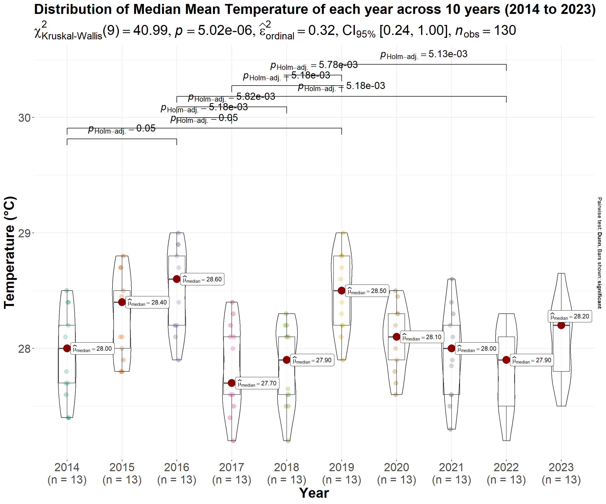
The plot above shows p-values of pairwise test that have p-values < 0.05 and for which the null hypothesis will be rejected at alpha = 0.05. There is sufficient evidence to indicate that there is a difference in the median mean temperature across the 10 years for:
2014 with 2016 and 2019
2016 with 2017, 2018 and 2022
2017 with 2019
2018 with 2019
2019 with 2022
Overall, this indicates that changes in mean temperature over the years is statistically significant.
The hypothesis is as follows:
H0: There is no difference between median daily mean temperature across 10 years.
H1: There is a difference between median daily mean temperature across 10 years.
p13 <- ggbetweenstats(
data = historical_temp,
x = year,
y = mean_temperature,
type = "np",
messages = FALSE,
title="Distribution of Daily Mean Temperature across 10 years (2014 to 2023)",
ylab = "Temperature (°C)",
xlab = "Year",
ggsignif.args = list(textsize = 5)
) +
theme(text = element_text(size = 20),plot.title=element_text(size=20))
p13This test shows a more detailed comparison of median daily mean temperature across the 10 years. As the p-values of the test above are < 0.05, we reject the null hypothesis at alpha = 0.05. There is sufficient evidence to indicate that there is a difference in the median daily mean temperature across the years.
The hypothesis is as follows:
H0: There is no difference between median max temperature of each year across 10 years.
H1: There is a difference between median max temperature of each year across 10 years.
p14 <- ggbetweenstats(
data = historical_temp_year,
x = year,
y = median_max_temp,
type = "np",
messages = FALSE,
title="Distribution of Median Max Temperature of each year across 10 years (2014 to 2023)",
ylab = "Temperature (°C)",
xlab = "Year",
ggsignif.args = list(textsize = 5)
) +
theme(text = element_text(size = 20),plot.title=element_text(size=20))
p14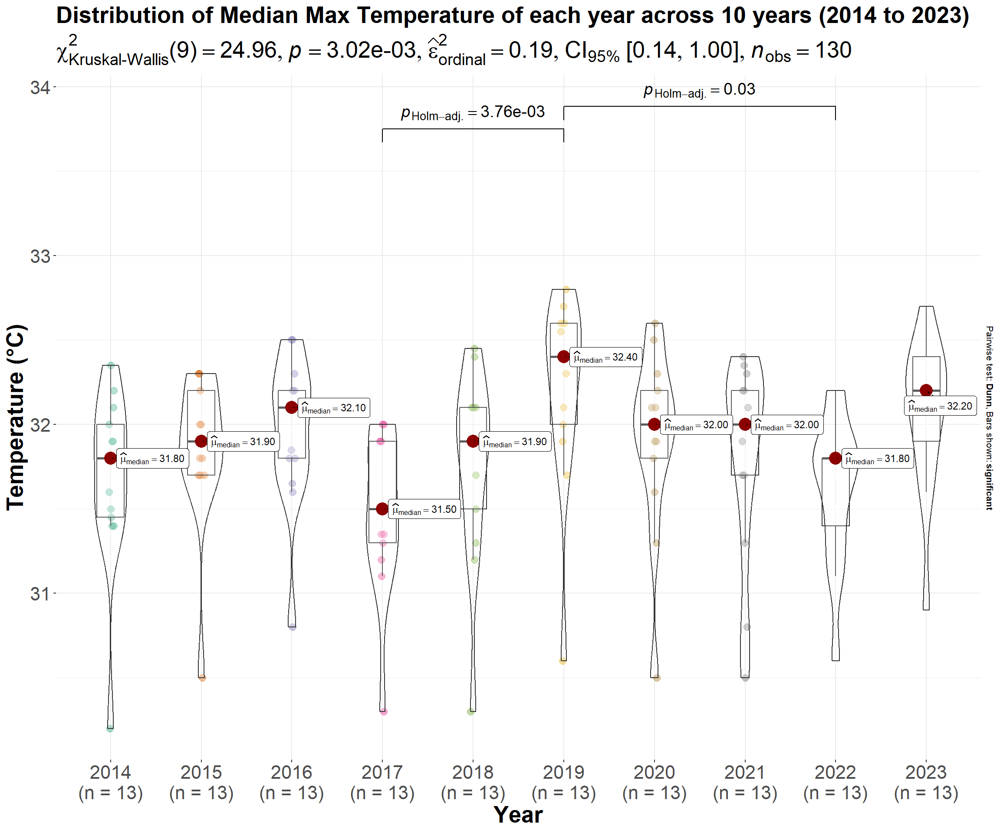
The plot above shows p-values of pairwise test that have p-values < 0.05 and for which the null hypothesis will be rejected at alpha = 0.05. There is sufficient evidence to indicate that there is a difference in the median max temperature across the years for:
2017 with 2019
2019 with 2022
Overall, this indicates that some changes in max temperature over the years are statistically significant, specifically for 2017 to 2022 period. Further observations/data collection will need to be carried out to study further changes.
The hypothesis is as follows:
H0: There is no difference between median daily max temperature across 10 years.
H1: There is a difference between median daily max temperature across 10 years.
p15 <- ggbetweenstats(
data = historical_temp,
x = year,
y = maximum_temperature,
type = "np",
messages = FALSE,
title="Distribution of Daily Max Temperature across 10 years (2014 to 2023)",
ylab = "Temperature (°C)",
xlab = "Year",
ggsignif.args = list(textsize = 5)
) +
theme(text = element_text(size = 20),plot.title=element_text(size=20))
p15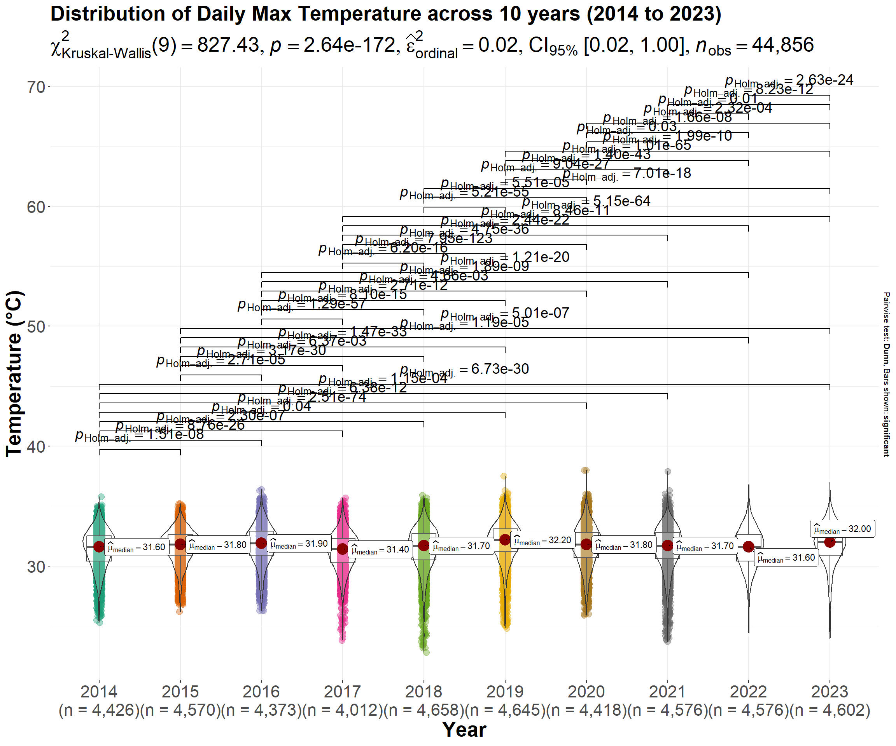
This test shows a more detailed comparison of median daily max temperature across the 10 years. As the p-values of the test above are < 0.05, we reject the null hypothesis at alpha = 0.05. There is sufficient evidence to indicate that there is a difference in the median daily max temperature across the years.
The hypothesis is as follows:
H0: There is no difference between median min temperature per year across 10 years.
H1: There is a difference between median min temperature per year across 10 years.
p16 <- ggbetweenstats(
data = historical_temp_year,
x = year,
y = median_min_temp,
type = "np",
messages = FALSE,
title="Distribution of Median Min Temperature of each year across 10 years (2014 to 2023)",
ylab = "Temperature (°C)",
xlab = "Year",
ggsignif.args = list(textsize = 5)
) +
theme(text = element_text(size = 20),plot.title=element_text(size=20))
p16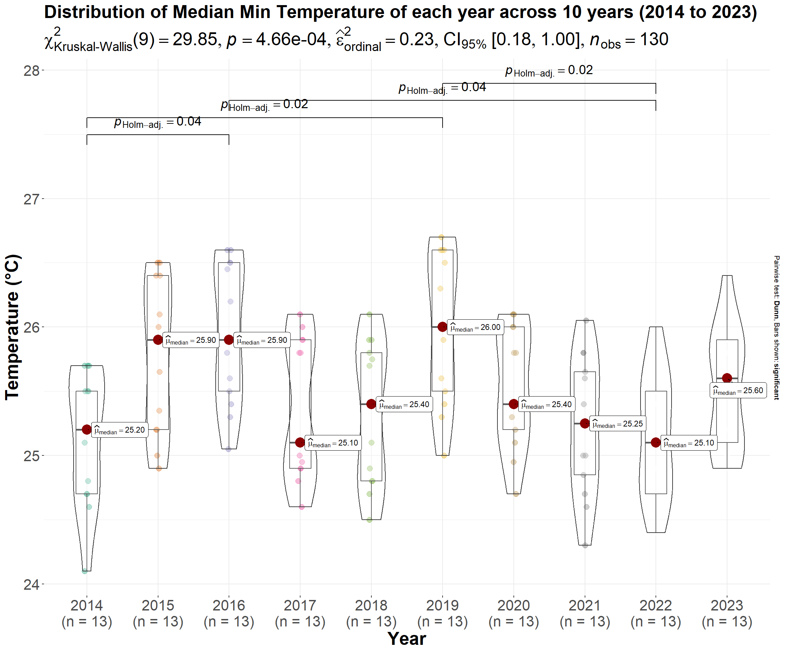
The plot above shows p-values of pairwise test that have p-values < 0.05 and for which the null hypothesis will be rejected at alpha = 0.05. There is sufficient evidence to indicate that there is a difference in the median min temperature across the years for:
2014 with 2016 and 2019
2016 with 2022
2019 with 2022
Overall, this indicates that changes in min temperature over the years is statistically significant.
The hypothesis is as follows:
H0: There is no difference between median daily min temperature across 10 years.
H1: There is a difference between median daily min temperature across 10 years.
p17 <- ggbetweenstats(
data = historical_temp,
x = year,
y = minimum_temperature,
type = "np",
messages = FALSE,
title="Distribution of Daily Min Temperature across 10 years (2014 to 2023)",
ylab = "Temperature (°C)",
xlab = "Year",
ggsignif.args = list(textsize = 5)
) +
theme(text = element_text(size = 20),plot.title=element_text(size=20))
p17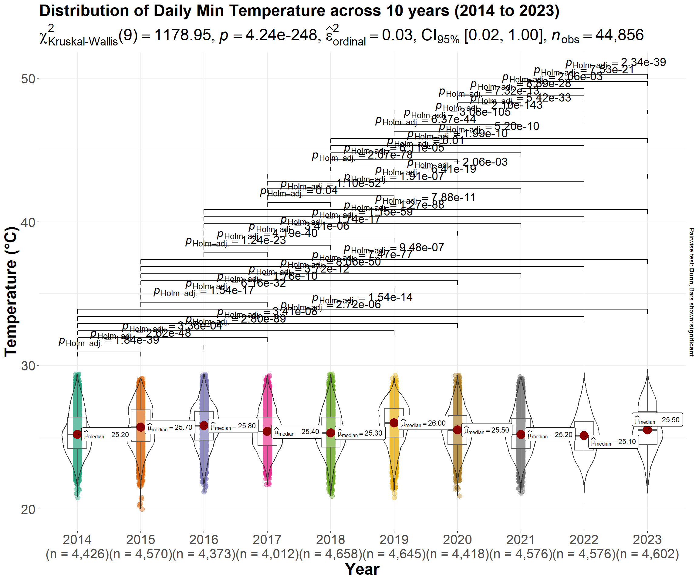
This test shows a more detailed comparison of median daily min temperature across the 10 years. As the p-values of the test above are < 0.05, we reject the null hypothesis at alpha = 0.05. There is sufficient evidence to indicate that there is a difference in the median daily min temperature across the years.
5.2 CDA #2 - Are there really certain months “drier” or “wetter”/ “hotter” or “cooler”?
5.2.1 Rainfall across different months
historical_rainfall_month <- historical_rainfall %>%
group_by(year,month) %>%
summarise(monthly_rainfall = sum(daily_rainfall_total))
DT::datatable(historical_rainfall_month,class = "compact")Saving it as a csv file:
write_csv(historical_rainfall_month, "data/historical_rainfall_month.csv")p18 <- ggplot(historical_rainfall_month,
aes(y=monthly_rainfall,
x = month,
fill = year)) +
geom_bar(stat = "identity")+
facet_wrap(~year, scales = "free_x") +
labs(title="Monthly rainfall each year from 2014 to 2023",
y = "Rainfall volume (mm)",
x = "Month") +
theme_minimal()+
theme(panel.spacing.y = unit(10, "lines"))
ggplotly(p18)From the above plots, in 2014 and 2015, it can be seen that rainfall volume is higher in the later months of the year however this is less obvious after 2016. Notably, in 2018 and 2021, a higher volume of rainfall was seen in January as compared to December.
To determine if there are certain months which are drier or wetter, we need to carry out statistical test to determine if there is a significant difference in the rainfall volume across months.
We first study the distribution of rainfall by month to determine if the distribution is normal or not-normal.
p19 <- ggplot(historical_rainfall,
aes(x = daily_rainfall_total,
y = month,
fill = 0.5 - abs(0.5-stat(ecdf)))) +
stat_density_ridges(geom = "density_ridges_gradient",
calc_ecdf = TRUE) +
scale_fill_viridis_c(name = "Tail probability",
direction = -1,
option="turbo")+
facet_wrap(~station) +
coord_cartesian(c(0,50))+
theme_ridges(font_size = 25)+
labs(title="Distribution of Daily Rainfall in a month from 2014 to 2023",
y="Station",
x="Rainfall volume (mm)")
p19
p20 <- ggplot(historical_rainfall,
aes(x = daily_rainfall_total,
y = month,
fill = 0.5 - abs(0.5-stat(ecdf)))) +
stat_density_ridges(geom = "density_ridges_gradient",
calc_ecdf = TRUE) +
scale_fill_viridis_c(name = "Tail probability",
direction = -1,
option="turbo")+
facet_wrap(~station) +
theme_ridges(font_size = 25)+
labs(title="Distribution of Daily Rainfall in a month from 2014 to 2023",
y="Station",
x="Rainfall volume (mm)")
p20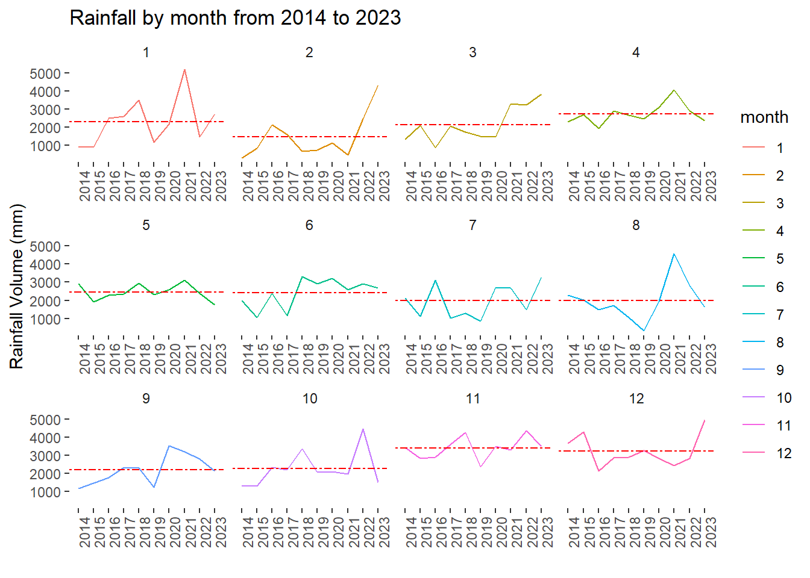
As can be seen from the plots above, the distribution of rainfall is not normal (with the plots right-skewed), as such, I will utilise non-parametric test.
The hypothesis is as follows:
H0: There is no difference between median rainfall across months.
H1: There is a difference between median rainfall across months.
p21 <- ggbetweenstats(
data = historical_rainfall_month,
x = month,
y = monthly_rainfall,
type = "np",
messages = FALSE,
title="Distribution of Median Rainfall across months (2014 to 2023)",
ylab = "Rainfall volume (mm)",
xlab = "Month",
ggsignif.args = list(textsize = 5)
) +
theme(text = element_text(size = 20), plot.title=element_text(size=20))
p21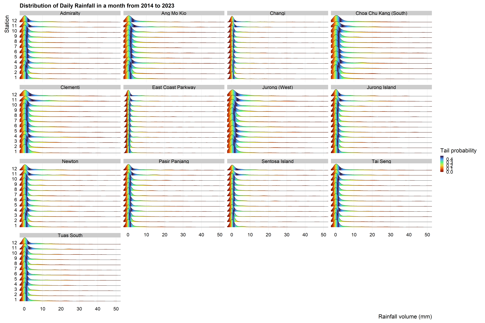
The plot above shows p-values of pairwise test that have p-values < 0.05 and for which the null hypothesis will be rejected at alpha = 0.05. There is sufficient evidence to indicate that there is a difference in the median rainfall across the months for:
February with November and December
August with November
Overall, this indicates that the differences in median rainfall across some months are statistically significant, with February being drier than November and December, and August being drier than November.
The hypothesis is as follows:
H0: There is no difference between median daily rainfall across months.
H1: There is a difference between median daily rainfall across months.
p22 <- ggbetweenstats(
data = historical_rainfall,
x = month,
y = daily_rainfall_total,
type = "np",
messages = FALSE,
title="Distribution of Daily Rainfall across months (2014 to 2023)",
ylab = "Rainfall volume (mm)",
xlab = "Month",
ggsignif.args = list(textsize = 5)
) +
theme(text = element_text(size = 20), plot.title=element_text(size=20))
p22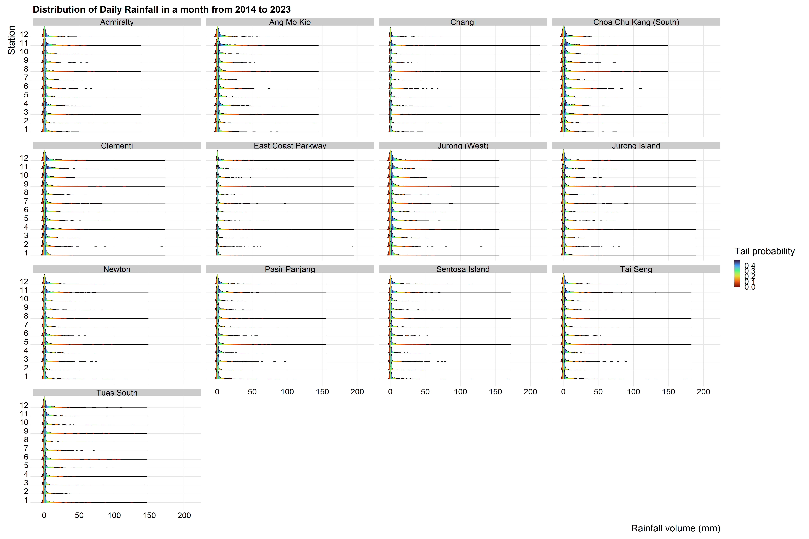
This test shows a more detailed comparison of median daily rainfall across the months. As the p-values of the test above are < 0.05, we reject the null hypothesis at alpha = 0.05. There is sufficient evidence to indicate that there is a difference in the median daily rainfall across the months.
5.2.2 Temperature across different months
historical_temp_month <- historical_temp %>%
group_by(year,month) %>%
summarise(median_mean_temp = median(mean_temperature),
median_max_temp = median(maximum_temperature),
median_min_temp = median(minimum_temperature))
DT::datatable(historical_temp_month,class = "compact")Saving it as a csv file:
write_csv(historical_temp_month, "data/historical_temp_month.csv")p23 <- ggplot(historical_temp_month,
aes(y = median_mean_temp,
x = as.numeric(month),
colour = year)) +
geom_line()+
facet_wrap(~year,scales = "free_x") +
labs(title="Daily mean temperature across weather stations from 2014 to 2023",
y = "Temperature (°C)",
x = "Year")+
coord_cartesian(ylim = c(20,35))+
scale_x_continuous(breaks = 1:12, labels = 1:12)+
theme_minimal() +
theme(panel.spacing.y = unit(5,"lines"))
ggplotly(p23)Based on observation, it seems like median daily mean temperature does not differ significantly across months from 2014 to 2023.
p24 <- ggplot(historical_temp_month,
aes(y = median_max_temp,
x = as.numeric(month),
colour = year)) +
geom_line()+
facet_wrap(~year,scales = "free_x") +
labs(title="Daily max temperature across weather stations from 2014 to 2023",
y = "Temperature (°C)",
x = "Year") +
coord_cartesian(ylim = c(25,35))+
scale_x_continuous(breaks = 1:12, labels = 1:12)+
theme_minimal() +
theme(panel.spacing.y = unit(5,"lines"))
ggplotly(p24)Based on observation, it seems like median daily max temperature does not differ significantly across months over the years from 2014 to 2023.
p25 <- ggplot(historical_temp_month,
aes(y = median_min_temp,
x = as.numeric(month),
colour = year)) +
geom_line()+
facet_wrap(~year,scales = "free_x") +
labs(title="Daily min temperature across weather stations from 2014 to 2023",
y = "Temperature (°C)",
x = "Year") +
coord_cartesian(ylim = c(20,30))+
scale_x_continuous(breaks = 1:12, labels = 1:12)+
theme_minimal() +
theme(panel.spacing.y = unit(5,"lines"))
ggplotly(p25)Based on observation, it seems like median daily minimum temperature does not differ significantly across months over the years from 2014 to 2023.
We visualise the distribution using ridgeline plots, using the code chunks below.
p26 <- ggplot(historical_temp,
aes(x = mean_temperature,
y = month,
fill = 0.5 - abs(0.5-stat(ecdf)))) +
stat_density_ridges(geom = "density_ridges_gradient",
calc_ecdf = TRUE) +
scale_fill_viridis_c(name = "Tail probability",
direction = -1,
option="turbo")+
facet_wrap(~station,scales = "free_x") +
theme_ridges(font_size = 25)+
labs(title="Distribution of Daily Mean Temperature from 2014 to 2023",
y="Station",
x="Temperature (°C)")
p26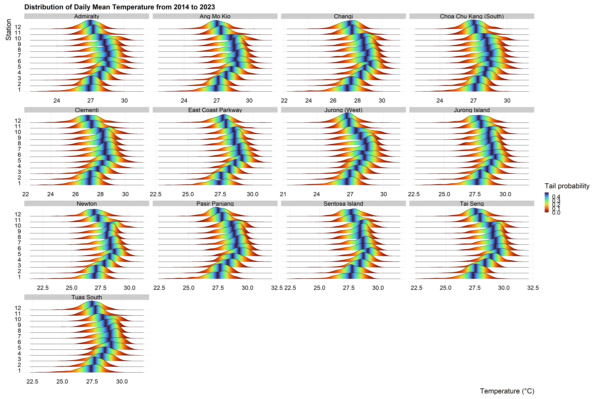
As can be seen from the plot above, the distribution of daily mean temperature is not normal, as such, non-parametric test will be used.
p27 <- ggplot(historical_temp,
aes(x = maximum_temperature,
y = month,
fill = 0.5 - abs(0.5-stat(ecdf)))) +
stat_density_ridges(geom = "density_ridges_gradient",
calc_ecdf = TRUE) +
scale_fill_viridis_c(name = "Tail probability",
direction = -1,
option="turbo")+
facet_wrap(~station,scales = "free_x") +
theme_ridges(font_size = 25)+
labs(title="Distribution of Daily Maximum Temperature from 2014 to 2023",
y="Station",
x="Temperature (°C)")
p27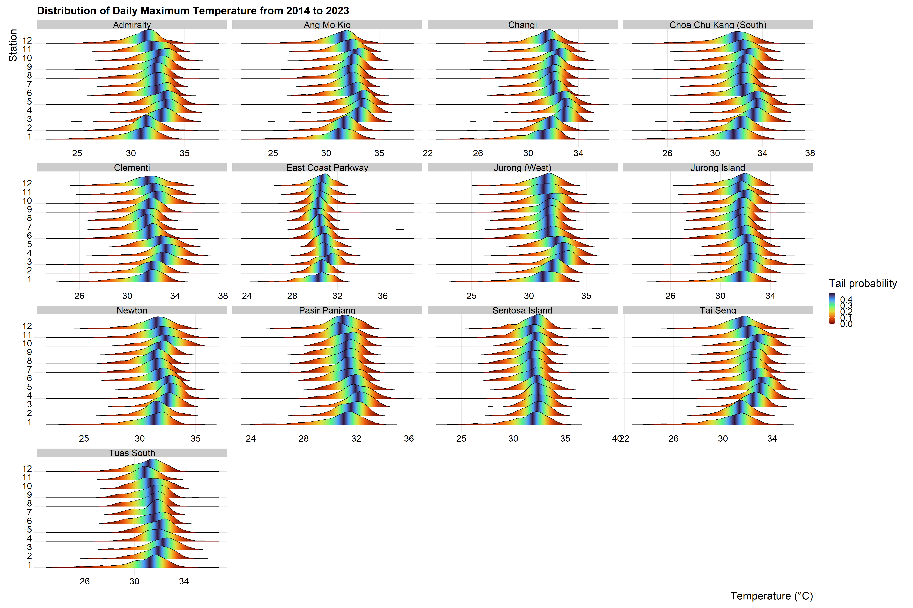
As can be seen from the plot above, the distribution of daily maximum temperature is not normal, as such, non-parametric test will be used.
p28 <- ggplot(historical_temp,
aes(x = minimum_temperature,
y = month,
fill = 0.5 - abs(0.5-stat(ecdf)))) +
stat_density_ridges(geom = "density_ridges_gradient",
calc_ecdf = TRUE) +
scale_fill_viridis_c(name = "Tail probability",
direction = -1,
option="turbo")+
facet_wrap(~station,scales = "free_x") +
theme_ridges(font_size = 25)+
labs(title="Distribution of Daily Minimum Temperature from 2014 to 2023",
y="Station",
x="Temperature (°C)")
p28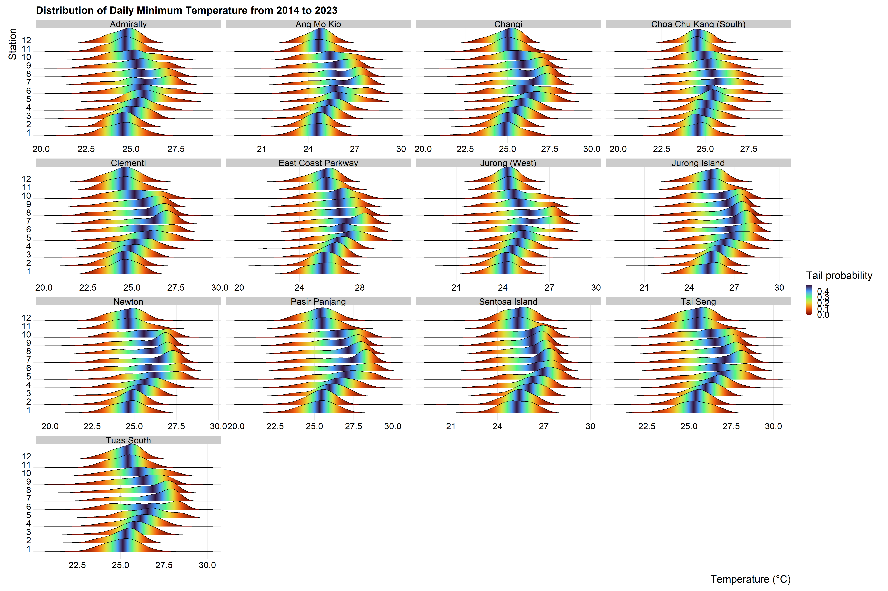
As can be seen from the plot above, the distribution of daily minimum temperature is not normal, as such, non-parametric test will be used.
The hypothesis is as follows:
H0: There is no difference between median mean temperature across months.
H1: There is a difference between median mean temperature across months.
p29 <- ggbetweenstats(data = historical_temp_month,
x = month,
y = median_mean_temp,
type = "np",
messages = FALSE,
title = "Distribution of Median Mean Temperature by month (2014 to 2023)",
ylab = "Temperature (C)",
xlab = "Month",
ggsignif.args = list(textsize =5)) +
theme(text = element_text(size = 20),plot.title = element_text(size = 20))
p29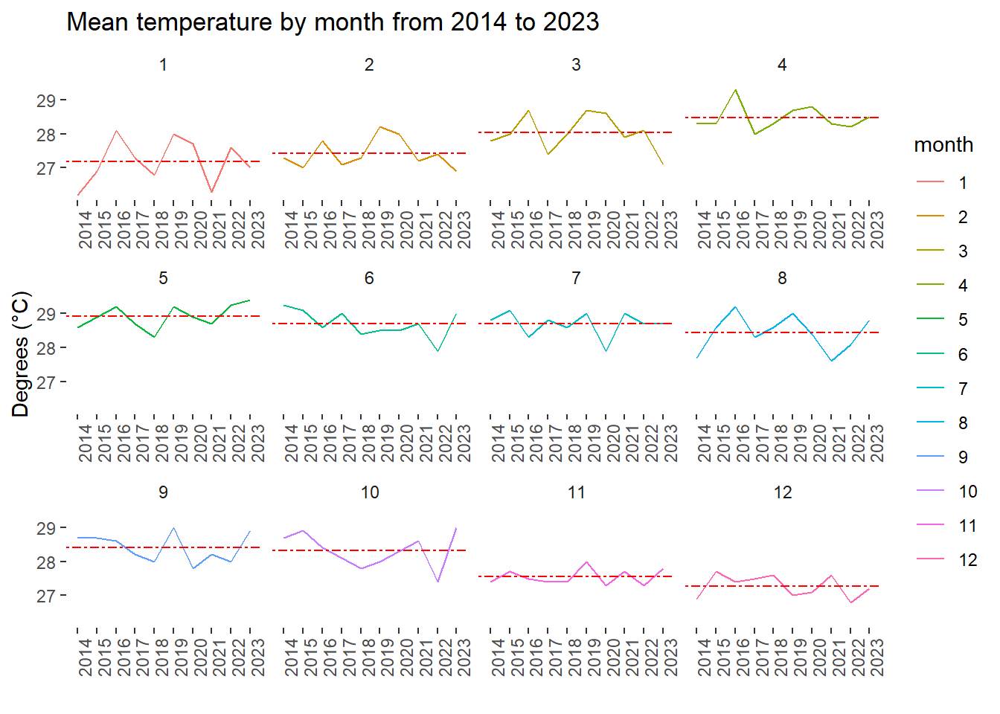
The plot above shows p-values of pairwise test that have p-values < 0.05 and for which the null hypothesis will be rejected at alpha = 0.05. There is sufficient evidence to indicate that there is a difference in the median mean temperature across the months for:
January with April to September
February with April to July
April with December
May to July with November and December
August and September with December
Overall, this indicates that the differences in median mean temperature across months is generally statistically significant. This suggests that mean temperatures are higher during the middle months of the year.
The hypothesis is as follows:
H0: There is no difference between median daily mean temperature across months.
H1: There is a difference between median daily mean temperature across months.
p30 <- ggbetweenstats(
data = historical_temp,
x = month,
y = mean_temperature,
type = "np",
messages = FALSE,
title="Distribution of Daily Mean Temperature across months (2014 to 2023)",
ylab = "Temperature (°C)",
xlab = "Month",
ggsignif.args = list(textsize = 5)
) +
theme(text = element_text(size = 20),plot.title=element_text(size=20))
p30
This test shows a more detailed comparison of median daily mean temperature across the months. As the p-values of the test above are < 0.05, we reject the null hypothesis at alpha = 0.05. There is sufficient evidence to indicate that there is a difference in the median daily mean temperature across the months.
The hypothesis is as follows:
H0: There is no difference between median max temperature across months.
H1: There is a difference between median max temperature across months.
p31 <- ggbetweenstats(data = historical_temp_month,
x = month,
y = median_max_temp,
type = "np",
messages = FALSE,
title = "Distribution of Median Max Temperature by month (2014 to 2023)",
ylab = "Temperature (C)",
xlab = "Month",
ggsignif.args = list(textsize =5)) +
theme(text = element_text(size = 20),plot.title = element_text(size = 20))
p31
The plot above shows p-values of pairwise test that have p-values < 0.05 and for which the null hypothesis will be rejected at alpha = 0.05. There is sufficient evidence to indicate that there is a difference in the median max temperature across the months for:
January with March to May
February with April
March with December
April with August, November and December
May with December
Overall, this indicates that the differences in median max temperature across months is generally statistically significant. This suggests that max temperatures are higher during the middle months of the year.
The hypothesis is as follows:
H0: There is no difference between median daily max temperature across months.
H1: There is a difference between median daily max temperature across months.
p32 <- ggbetweenstats(
data = historical_temp,
x = month,
y = maximum_temperature,
type = "np",
messages = FALSE,
title="Distribution of Daily Maximum Temperature across months (2014 to 2023)",
ylab = "Temperature (°C)",
xlab = "Month",
ggsignif.args = list(textsize = 5)
) +
theme(text = element_text(size = 20),plot.title=element_text(size=20))
p32
This test shows a more detailed comparison of median daily max temperature across the months. As the p-values of the test above are < 0.05, we reject the null hypothesis at alpha = 0.05. There is sufficient evidence to indicate that there is a difference in the median daily max temperature across the months.
The hypothesis is as follows:
H0: There is no difference between median min temperature across months.
H1: There is a difference between median min temperature across months.
p33 <- ggbetweenstats(data = historical_temp_month,
x = month,
y = median_min_temp,
type = "np",
messages = FALSE,
title = "Distribution of Median Min Temperature by month (2014 to 2023)",
ylab = "Temperature (C)",
xlab = "Month",
ggsignif.args = list(textsize =5)) +
theme(text = element_text(size = 20),plot.title = element_text(size = 20))
p33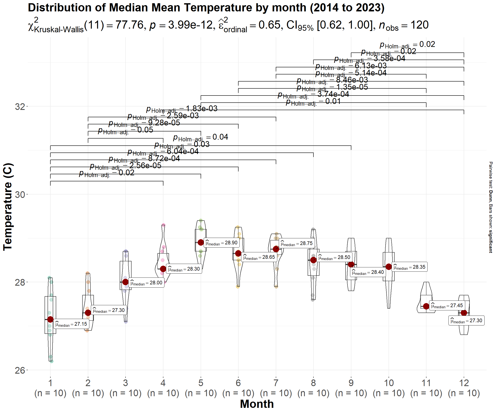
The plot above shows p-values of pairwise test that have p-values < 0.05 and for which the null hypothesis will be rejected at alpha = 0.05. There is sufficient evidence to indicate that there is a difference in the median min temperature across the months for:
January with May to August
February with May to August
May with December
June to August with November and December
Overall, this indicates that the differences in median min temperature across months is generally statistically significant. This suggests that min temperatures are higher during the middle months of the year.
The hypothesis is as follows:
H0: There is no difference between mean daily min temperature across months.
H1: There is a difference between mean daily min temperature across months.
p34 <- ggbetweenstats(
data = historical_temp,
x = month,
y = minimum_temperature,
type = "np",
messages = FALSE,
title="Distribution of Daily Minimum Temperature across months (2014 to 2023)",
ylab = "Temperature (°C)",
xlab = "Month",
ggsignif.args = list(textsize = 5)
) +
theme(text = element_text(size = 20),plot.title=element_text(size=20))
p34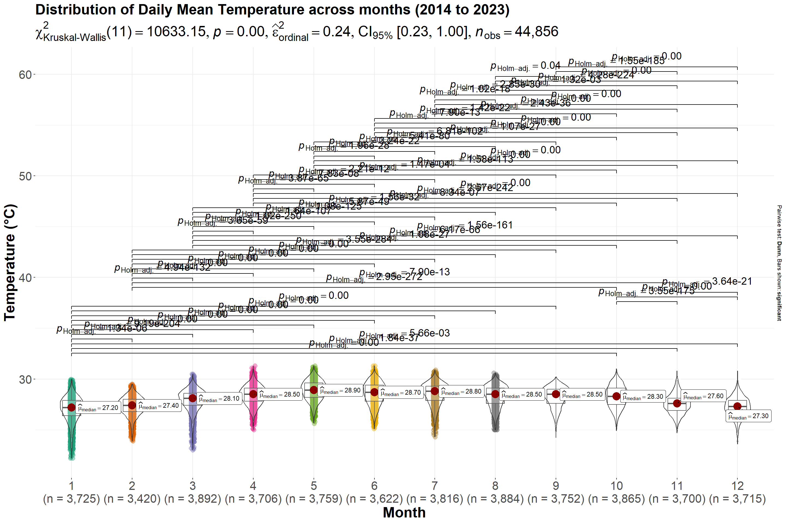
This test shows a more detailed comparison of median daily min temperature across the months. As the p-values of the test above are < 0.05, we reject the null hypothesis at alpha = 0.05. There is sufficient evidence to indicate that there is a difference in the median daily min temperature across the months.
5.3 CDA #3 - Are there certain locations “drier” or “wetter”/ “hotter” or “cooler”?
5.3.1 Rainfall across different weather stations
The hypothesis is as follows:
H0: There is no difference between median yearly rainfall across weather stations.
H1: There is a difference between median yearly rainfall across weather stations.
p35 <- ggbetweenstats(
data = historical_rainfall_year,
x = station,
y = yearly_rainfall,
type = "np",
messages = FALSE,
title="Distribution of Yearly Rainfall by Station",
ylab = "Rainfall volume (mm)",
xlab = "Station",
ggsignif.args = list(textsize = 3)
) +
theme(axis.text.x = element_text(angle = 90, vjust = 1, hjust = 1),
plot.title = element_text(size = 15),
text = element_text(size = 15))
p35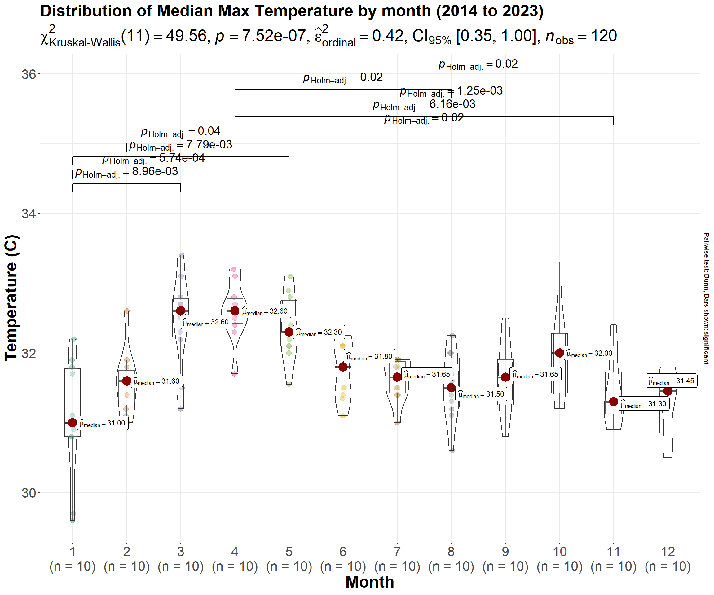
As seen from the plot above, the p-value is < 0.05 and hence we will reject the null hypothesis at alpha = 0.05. There is sufficient evidence to indicate that there is a difference in the median yearly rainfall across stations.
The hypothesis is as follows:
H0: There is no difference between median daily rainfall across weather stations.
H1: There is a difference between median daily rainfall across weather stations
p36 <- ggbetweenstats(
data = historical_rainfall,
x = station,
y = daily_rainfall_total,
type = "np",
messages = FALSE,
title="Distribution of Daily Rainfall by Station",
ylab = "Rainfall volume (mm)",
xlab = "Station",
ggsignif.args = list(textsize = 3)
) +
theme(axis.text.x = element_text(angle = 90, vjust = 1, hjust = 1),
plot.title = element_text(size = 15),
text = element_text(size = 15))
p36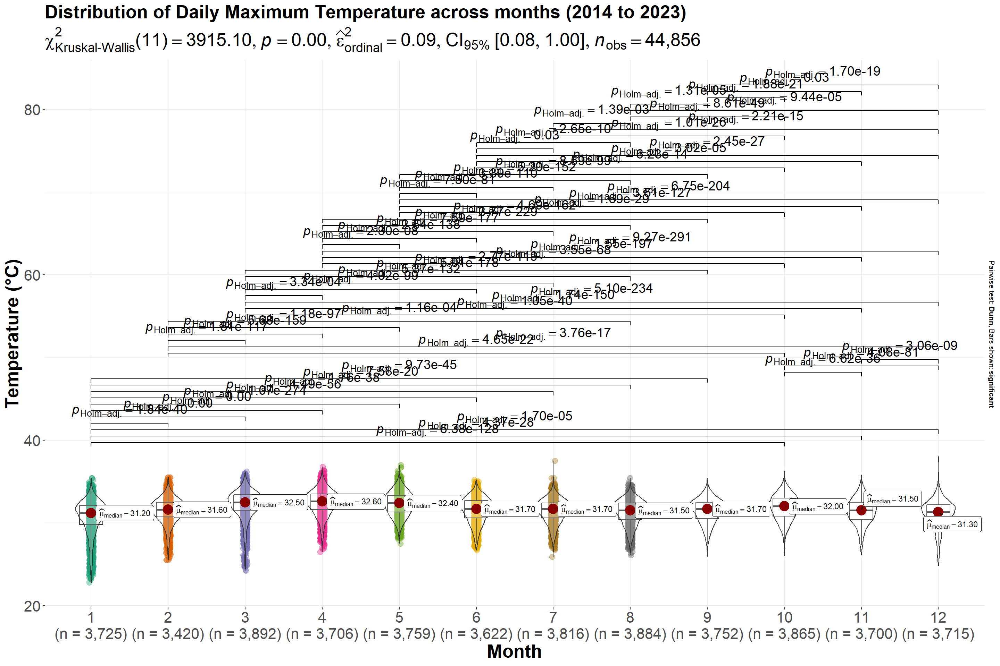
This test shows a more detailed comparison of median daily rainfall across the stations. The plot above shows p-values of pairwise test that have p-values < 0.05 and for which the null hypothesis will be rejected at alpha = 0.05. There is sufficient evidence to indicate that there is a difference in the median daily rainfall across stations for:
Admiralty with Changi, East Coast Parkway, Jurong Island, Pasir Panjang and Sentosa
Ang Mo Kio with Changi, East Coast Parkway, Jurong Island, Pasir Panjang and Sentosa
Changi with Choa Chu Kang (South), Clementi, Jurong (West), Newton, Tai Seng and Tuas South
Choa Chu Kang (South) with East Coast Parkway, Jurong Island, Newton, Pasir Panjang, Sentosa, Tai Seng and Tuas South
Clementi with East Coast Parkway, Jurong Island, Pasir Panjang and Sentosa
East Coast Parkway with Jurong (West), Jurong Island, Newton, Pasir Panjang, Tai Seng and Tuas South
Jurong (West) with Jurong Island, Newton, Pasir Panjang, Sentosa, Tai Seng and Tuas South
Overall, this indicates that the differences in median daily rainfall across stations is generally statistically significant and that different regions in Singapore vary in degree of dryness/wetness.
5.3.2 Temperature across different weather stations
The hypothesis is as follows:
H0: There is no difference between median yearly mean temperature across weather stations.
H1: There is a difference between median yearly mean temperature across weather stations.
p37 <- ggbetweenstats(
data = historical_temp_year,
x = station,
y = median_mean_temp,
type = "np",
messages = FALSE,
title="Distribution of Yearly Mean Temperature by Station",
ylab = "Temperature (°C)",
xlab = "Station",
ggsignif.args = list(textsize = 3)
) +
theme(axis.text.x = element_text(angle = 90, vjust = 1, hjust = 1),
plot.title = element_text(size = 15),
text = element_text(size = 15))
p37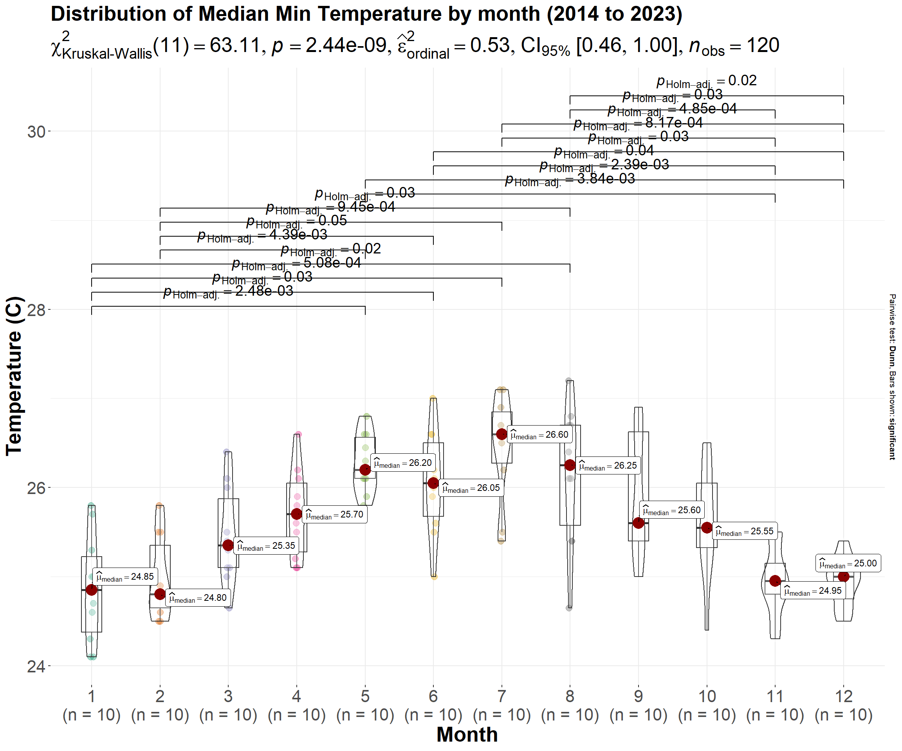
The plot above shows p-values of pairwise test that have p-values < 0.05 and for which the null hypothesis will be rejected at alpha = 0.05. There is sufficient evidence to indicate that there is a difference in the median yearly mean temperature for stations:
Admiralty with East Coast Parkway, Jurong Island, Pasir Panjang, Sentosa Island and Tai Seng
Choa Chu Kang (South) with Jurong Island and Tai Seng
Clementi with Jurong Island and Tai Seng
East Coast Parkway with Jurong (West)
Jurong (West) with Jurong Island, Pasir Panjang, Sentosa Island, Tai Seng and Tuas South
Jurong Island with Newton
Newton with Pasir Panjang and Tai Seng
Overall, this indicates that the differences in median yearly mean temperature across stations is generally statistically significant. This suggests that different regions of Singapore are hotter/cooler.
The hypothesis is as follows:
H0: There is no difference between median daily mean temperature across weather stations.
H1: There is a difference between median daily mean temperature across weather stations.
p38 <- ggbetweenstats(
data = historical_temp,
x = station,
y = mean_temperature,
type = "np",
messages = FALSE,
title="Distribution of Daily Mean Temperature by Station",
ylab = "Temperature (°C)",
xlab = "Station",
ggsignif.args = list(textsize = 3)
) +
theme(axis.text.x = element_text(angle = 90, vjust = 1, hjust = 1),
plot.title = element_text(size = 15),
text = element_text(size = 15))
p38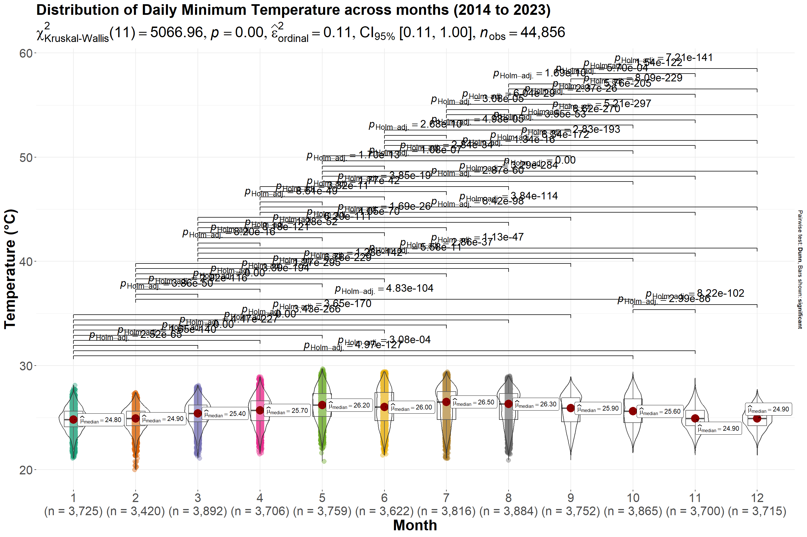
This test shows a more detailed comparison of median daily mean temperature across the stations. The plot above shows p-values of pairwise test that have p-values < 0.05 and for which the null hypothesis will be rejected at alpha = 0.05. There is sufficient evidence to indicate that there is a difference in the median daily mean temperature across stations.
The hypothesis is as follows:
H0: There is no difference between median yearly maximum temperature across weather stations.
H1: There is a difference between median yearly maximum temperature across weather stations.
p39 <- ggbetweenstats(
data = historical_temp_year,
x = station,
y = median_max_temp,
type = "np",
messages = FALSE,
title="Distribution of Yearly Max Temperature by Station",
ylab = "Temperature (°C)",
xlab = "Station",
ggsignif.args = list(textsize = 3)
) +
theme(axis.text.x = element_text(angle = 90, vjust = 1, hjust = 1),
plot.title = element_text(size = 15),
text = element_text(size = 15))
p39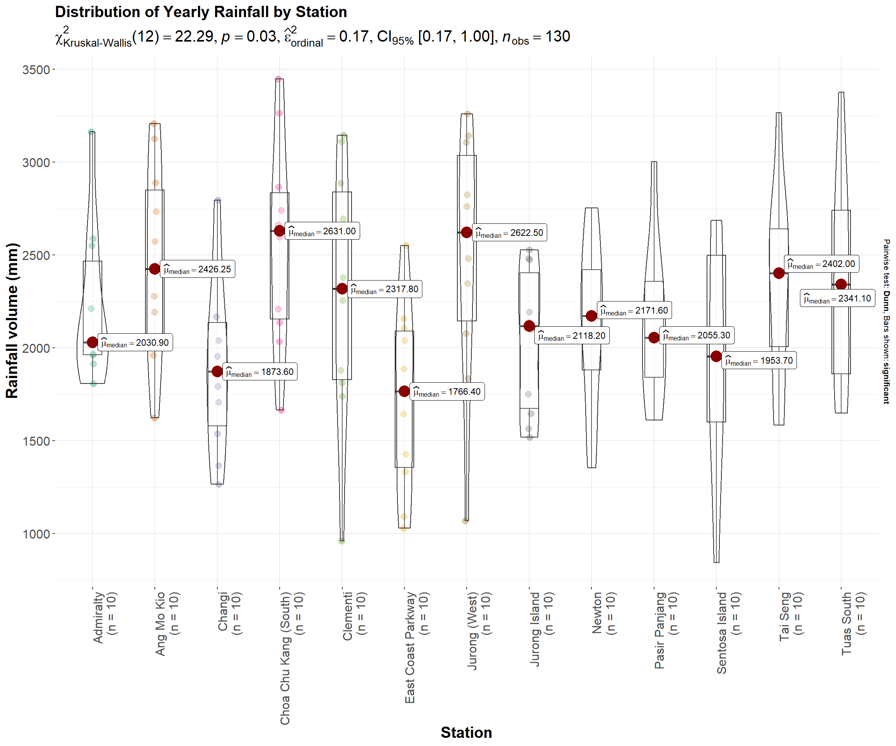
The plot above shows p-values of pairwise test that have p-values < 0.05 and for which the null hypothesis will be rejected at alpha = 0.05. There is sufficient evidence to indicate that there is a difference in the median yearly max temperature for stations:
Admiralty with East Coast Parkway and Pasir Panjang
Ang Mo Kio with East Coast Parkway, Pasir Panjang and Tuas South
Changi with East Coast Parkway
Choa Chu Kang (South) with East Coast Parkway, Jurong Island, Pasir Panjang and Tuas South
Clementi with East Coast Parkway and Pasir Panjang
East Coast Parkway with Sentosa Island and Tai Seng
Pasir Panjang with Tai Seng
Tai Seng with Tuas South
Overall, this indicates that the differences in median yearly max temperature across stations is generally statistically significant. This suggests that different regions of Singapore are hotter/cooler.
The hypothesis is as follows:
H0: There is no difference between median daily maximum temperature across weather stations.
H1: There is a difference between median daily maximum temperature across weather stations.
p40 <- ggbetweenstats(
data = historical_temp,
x = station,
y = maximum_temperature,
type = "np",
messages = FALSE,
title="Distribution of Daily Maximum Temperature by Station",
ylab = "Temperature (°C)",
xlab = "Station",
ggsignif.args = list(textsize = 3)
) +
theme(axis.text.x = element_text(angle = 90, vjust = 1, hjust = 1),
plot.title = element_text(size = 15),
text = element_text(size = 15))
p40This test shows a more detailed comparison of median daily max temperature across the stations. The plot above shows p-values of pairwise test that have p-values < 0.05 and for which the null hypothesis will be rejected at alpha = 0.05. There is sufficient evidence to indicate that there is a difference in the median daily max temperature across stations.
The hypothesis is as follows:
H0: There is no difference between median yearly minimum temperature across weather stations.
H1: There is a difference between median yearly minimum temperature across weather stations.
p41 <- ggbetweenstats(
data = historical_temp_year,
x = station,
y = median_min_temp,
type = "np",
messages = FALSE,
title="Distribution of Yearly Min Temperature by Station",
ylab = "Temperature (°C)",
xlab = "Station",
ggsignif.args = list(textsize = 3)
) +
theme(axis.text.x = element_text(angle = 90, vjust = 1, hjust = 1),
plot.title = element_text(size = 15),
text = element_text(size = 15))
p41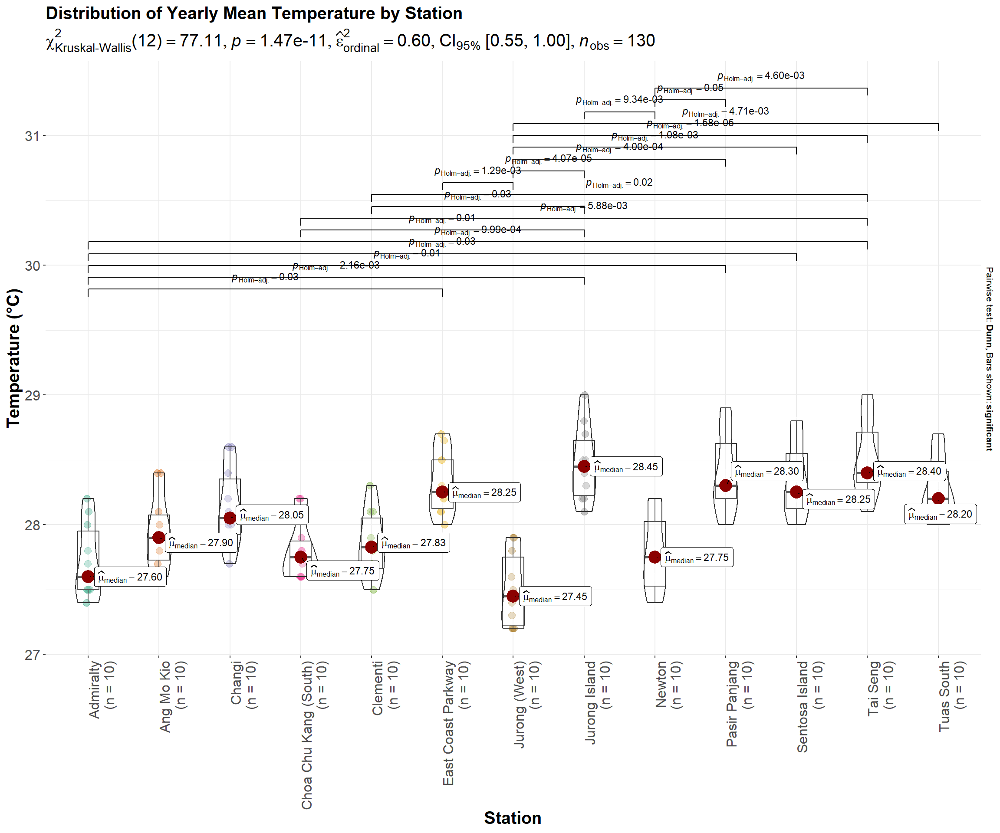
The plot above shows p-values of pairwise test that have p-values < 0.05 and for which the null hypothesis will be rejected at alpha = 0.05. There is sufficient evidence to indicate that there is a difference in the median yearly min temperature for stations:
Admiralty with East Coast Parkway, Jurong Island, Pasir Panjang, Sentosa Island and Tai Seng
Ang Mo Kio with East Coast Parkway, Pasir Panjang and Tai Seng
Choa Chu Kang (South) with East Coast Parkway, Jurong Island, Pasir Panjang, Sentosa Island, Tai Seng and Tuas South
Clementi with East Coast Parkway, Jurong Island, Pasir Panjang, Sentosa Island and Tai Seng
East Coast Parkway with Jurong (West) and Newton
Jurong (West) with Jurong Island, Pasir Panjang, Sentosa Island, Tai Seng and Tuas South
Overall, this indicates that the differences in median yearly min temperature across stations is generally statistically significant. This suggests that different regions of Singapore are hotter/cooler.
The hypothesis is as follows:
H0: There is no difference between median daily minimum temperature across weather stations.
H1: There is a difference between median daily minimum temperature across weather stations.
p42 <- ggbetweenstats(
data = historical_temp,
x = station,
y = minimum_temperature,
type = "np",
messages = FALSE,
title="Distribution of Daily Minimum Temperature by Station",
ylab = "Temperature (°C)",
xlab = "Station",
ggsignif.args = list(textsize = 3)
) +
theme(axis.text.x = element_text(angle = 90, vjust = 1, hjust = 1),
plot.title = element_text(size = 15),
text = element_text(size = 15))
p42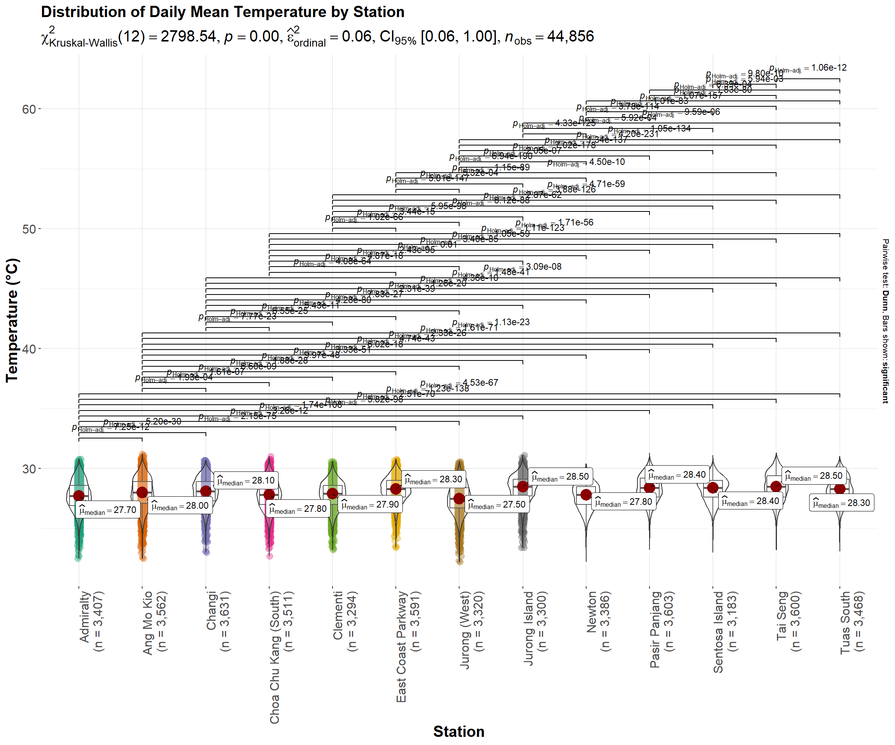
This test shows a more detailed comparison of median daily min temperature across the stations. The plot above shows p-values of pairwise test that have p-values < 0.05 and for which the null hypothesis will be rejected at alpha = 0.05. There is sufficient evidence to indicate that there is a difference in the median daily min temperature across stations.
5.4 CDA Summary Table
| S/N | CDA | Findings |
|---|---|---|
| 1.1 | Are the changes in rainfall over the years statistically significant? |
|
| 1.2 | Are the changes in temperature over the years statistically significant? |
|
| 2.1 | Are there really certain months “drier” or “wetter”? |
|
| 2.2 | Are there really certain months “hotter” or “cooler”? |
|
| 3.1 | Are there certain locations “drier” or “wetter”? |
|
| 3.2 | Are there certain locations “hotter” or “cooler”? |
|
6. UI Design
The envisioned UI design is as follows:

| Components for UI Design | Explanation |
|---|---|
| Type of test | To enable the user to select among the four types of test available for statistical analysis using
By default, the selected parameter is non-parametric based on the non-normal distribution of the data as determined through analysis in the above sections (5.1.1 Historical rainfall over the years and 5.1.2 Historical temperature over the years). |
| Plot type | To enable user to select among the three options of plot type available for statistical analysis using
|
| Confidence level | To enable the user to select between 95% and 99% confidence level to observe how results would change. |
| Pairwise display | To enable the user to choose whether they want to display significant or non-significant pairwise p-values on the plot, providing them with flexibility and ease of visualisation. As statistical analysis above spans across large numbers, there is a large number of pairwise comparisons:
Offering users the option to choose between significant and non-significant pairwise p-values for display, they can focus their attention on comparisons that are most relevant for their analysis. For instance, if a user is primarily interested in identifying statistically significant differences, they may choose to display only the significant pairwise p-values. This can help them quickly identify the most important comparisons without being overwhelmed by a cluttered plot. This will facilitate better interpretation of the results. |